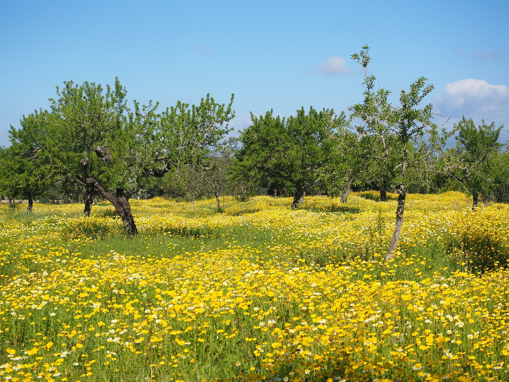

Nuestra cooperativa tiene diferentes tipos de aceite de oliva de la mayor calidad y el mejor sabor. Siempre a la vanguardia en innovación y desarrollo de nuevas técnicas e investigaciones relacionadas con el cultivo del olivar, la calidad en la elaboración del aceite y la aplicación y potenciación de los subproductos del olivar.
Presentamos una amplia variedad de aceites, aceite de oliva virgen extra, de cosecha temprana, entre muchos otros.
Un aceite de calidad y tradicional con un formato ideal para el uso diario al ser pequeñas botellas pensadas para los desayunos.
Un aceite de calidad y tradicional con un formato ideal para el uso diario al ser pequeñas botellas pensadas para los desayunos.

Un aceite de calidad al ser un aceite de primera prensada un aceite pensado para freír y para las ensaladas.
Un aceite de oliva virgen extra ecológico el cual no esta filtrado y lo puedes tener en grandes o pequeñas cantidades al tener envase pequeño y grande.
Buscamos la calidad y la variedad, con el objetivo de que el consumidor quede satisfecho. A eso hay que sumarles nuestras maravillosas instalaciones y el cuidado de nuestros olivos para conseguir la mejor cosecha posible.
